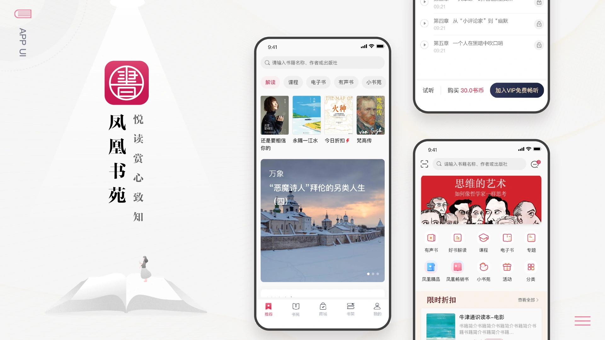
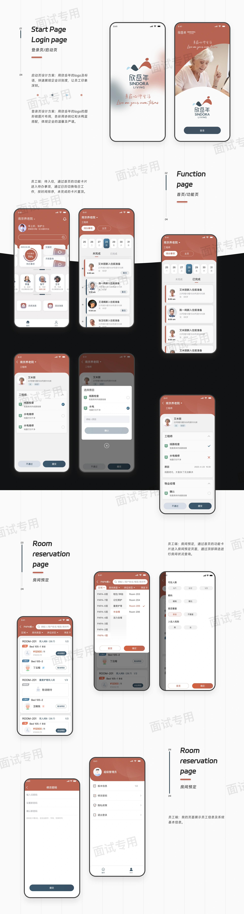
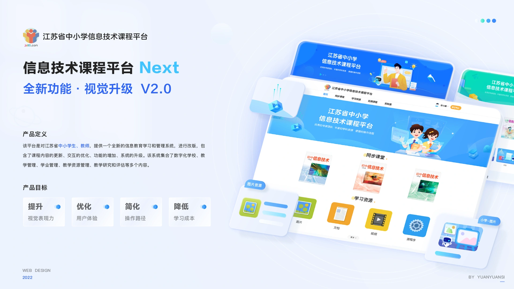

你好，我是司媛媛 ✳
一名关注体验与细节的 UI 设计师。用理性的思考梳理问题，用感性的表达赋予温度，在功能与美感之间，寻找自然的平衡。
从发现问题到打磨界面，让每一步思考，都成为更好的体验。
以清晰的视觉层级与克制的表达，构建舒适、有秩序的数字界面。
理解用户的目标与使用场景，让复杂的流程变得直觉、顺畅。
让组件、规范与设计语言保持一致，为高效协作与持续迭代建立基础。
一些关于体验、秩序与美感的探索。查看完整作品集 · 61 张作品 ↗



保持好奇，持续创造。ALWAYS CURIOUS. ALWAYS CREATING.